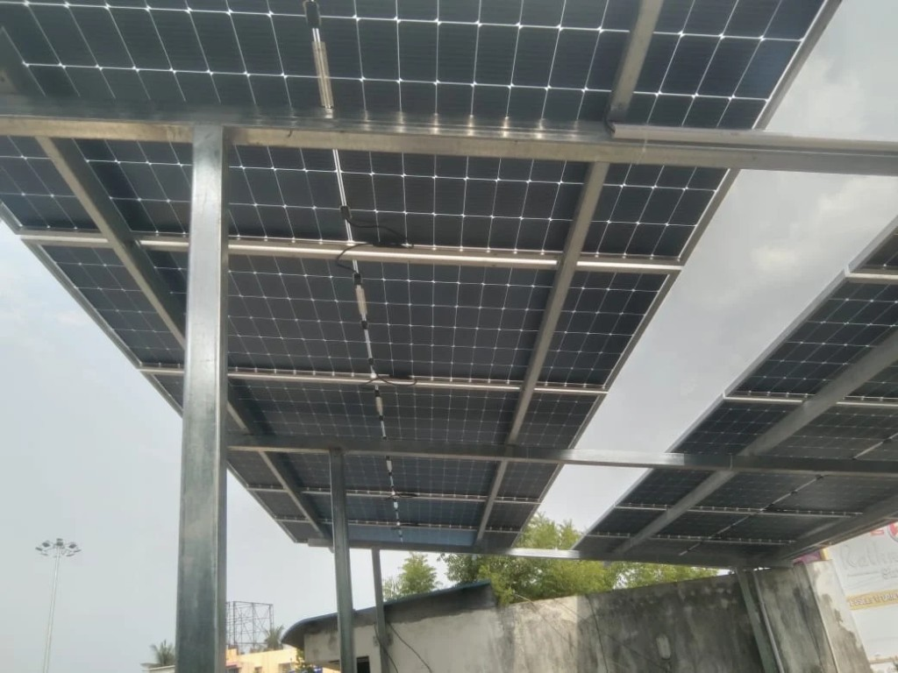

01
Which meter
We read the domestic bill. The shop connection is noted and then left out of the size.
Palavakkam homes above a ground-floor shop
On East Coast Road a building is often a shop below and a family above. The terrace can serve the home only when that is the meter, and the name on the roof. We do not size a plant to the shop's bill. The visit from Madipakkam is free.

Two bills, one slab
Between Thiruvanmiyur and Neelankarai, many plots on the landward side of East Coast Road were built this way. The ground floor pays a commercial bill. The floors above pay a domestic one. The modules, if they go up, have to follow the domestic daytime use. Connecting them to the shop would be a different supply, and it is not the plant this page describes.
The terrace still has to be the household's. If the deed puts the roof with the shop, we stop until that is clear. Once it is the home's, the tank stays and a walkway stays. Direct salt spray on the glass is the beach-facing case, on the Neelankarai page. Shared roofs and road dust are the Thiruvanmiyur case. Here the split is the two meters. City-wide module choice is on panels for a Chennai home.
Home meter onlyShop bill left outVisit from MadipakkamBefore a row is drawn
We read the domestic bill. The shop connection is noted and then left out of the size.
The terrace has to belong to the household. A roof in the shop's name is not a home plant.
The overhead tank stays. A walkway stays, so the upper floor can still reach it.
Central assistance needs cells and modules made in India. Eligible homes can receive up to ₹78,000. The amount follows the scheme on the day you apply.
Who it suits
Homes on the landward side of East Coast Road, and in the lanes just off it, are the usual fit when the upper floors and the roof are one household. A beach-facing bungalow is a different survey. A flat with no terrace of its own is not a private plant. A balcony over the road is not a mounting place.
How the row is fixed once the meter is clear is on solar panel installation. Modules you already hold are labour, quoted on installation services. The subsidy gap is on panel and price. NDCR against DCR is in that guide before an import is confirmed.
Bring the right bill
Yes. The roof visit is free. Bring the home bill, not only the shop bill. You can stop after we match the terrace to that meter. No modules are ordered that day.
The home meter. If the terrace is in the shop's name, we stop until the deed shows the household may use it.
No. Direct spray is the beach-facing case. Here we separate the two meters, then size the row to the home's daytime use.
Yes. Cells and modules must be made in India. Eligible homes can receive up to ₹78,000, subject to the scheme on the day you apply. NDCR is only if that assistance has already been given up.
A free visit from Madipakkam. We match the terrace to the home meter, then note whether the plant should be DCR.
Request your free quote →